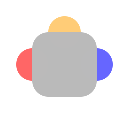

Welcome to The Feed
The ultimate social-media

eat
Why choose the feed?
- Easy to use. When being fed you can do one of four things: Upvote, Downvote, Bookmark & ignore. All of which load the next post. The cycle continues.
- While we don't have image hosting. You can still add links to your posts. The combination of text and links makes this social-media turing-complete. This has never been done before.
- The architecture of the website discourages intra-site reposting and creates healthy distribution of content.